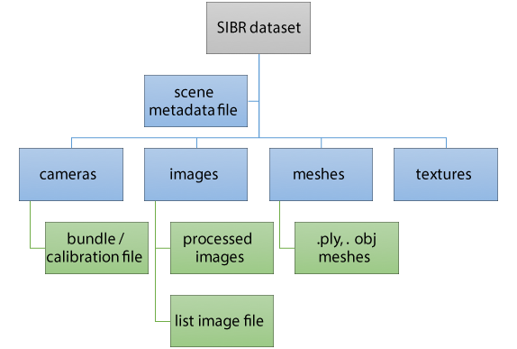

Most Projects take as input a multi-view dataset, i.e., a set of images taken using a camera (phone, DSLR, videocamera such as GoPro etc).
In almost all cases we assume that a Structure-from-Motion (SfM) algorithm has been run on the input images to generate calibrated cameras, and most often a second Multi-View Stereo (MVS) step has been run, to generate a reconstructed 3D mesh. Optionally, we may also use dense depth maps that come from MVS.
In SIBR we have a `‘native’' dataset format, described below, which was used traditionally for some of the original Projects. For most recent projects we have used the commercial tool RealityCapture for SfM/MVS, since it tends to produce the best overall reconstruction quality. In some recent projects (e.g., DeepBlending, or SemanticCars, see Projects), we have used Colmap, since the dense per-view depth maps are very useful.
As a result, SIBR supports two types of dataset natively:
- Native SIBR datasets, created using the tools described below, from RealityCapture or Colmap. We provide pre-processing documentation following which you can create SIBR compatible datasets from output of these two SfM/MVS systems:
- Native Colmap datasets: we simply create a metadata file the first time the dataset is read.
Different Projects often add additional information to their datasets, typically via multiple pre-processing utilities, some general, some specific to the Project. Python scripts designed to process and prepare datasets are provided with each project along with instructions on how to use them in the corresponding documentation.
Basic SIBR Dataset Structure and Generation
The basic structure of and SIBR dataset is shown below:

An SIBR dataset directory structure after preprocessing
The directory structure is as follows:
- The cameras directory contains the calibrated cameras, using the Bundler format by default (The bundle.out file).
- The images directory that contains the undistorted images from the reconstruction and the list images file (The list_images.txt file)
- The meshes directory that contains a recon.ply file that is the 3D reconstruction of the scene and the texture
- Todo:
- FIX THE TEXTURE PLACEMENT ISSUE
To generate a dataset after following the procedure for RealityCapture, you need to perform the following steps:
- Generate and build the solution to generate executables for preprocessing applications.
- Go to
install\scripts
- Run the python script using
- Specifying the binaries directory is optional. While compiling cmake automatically generates settings file which is parsed by the script to set bin directory.
- The script calls the distordCrop, cropFromCenter, and clipping_planes app executables; make sure they are up to date.
- They crop the images to remove the black borders; the –ratio parameter to distordCrop (currently 0.2 (/.5)) sets the percentage of border which can be removed. Images that have larger black borders are removed from the dataset.
- They also copy the meshes (ply and obj if available) and modifies the bundle.out and list_images.txt to the new values of resolution, and removes the images excluded (the numbers can be found in Dataset\SibrData\raw\excluded_images.txt)
- Next they compute the clipping planes for each camera corresponding to input images and stores them in a clipping_planes.txt file.
- Finally, they parse all data to create a scene_metadata.txt file which holds information of the images, clipping planes etc. and is used to create the scene. This file can be manually extended.
- [Recommended] If you do not want to create a copy of the dataset, you can only specify the input directory with -i option. The dataset will be generated within the input directory itself.
Dataset Files and Formats
The following sections contain documentation of the various files used in the dataset. Some are inherited from other SfM/MVS solutions.
The metadata.txt file
- Todo:
- Add this
The bundle.out file
Content: the bundler documentation explain all what it contain
Description: the output of the bundler
Bundle file format is in plain text :
# Bundle file v0.3
<num_cameras> <num_points> [two integers]
<camera1>
<camera2>
...
<cameraN>
<point1>
<point2>
...
<pointM>
Where <camera> contain :
<f> <k1> <k2> [the focal
length, followed by two radial distortion coeffs]
<
R> [a 3x3 matrix representing the camera rotation]
<t> [a 3-vector describing the camera translation]
And where <point> contain :
<position> [a 3-vector describing the 3
D position of the point]
<
color> [a 3-vector describing the RGB
color of the point]
<view list> [a list of views the point is visible in]
The list_images.txt file
Content: It a list of all input images sorted by order it was taken (renamed) with their resolution
Description: If you have ImageMagick you can do : identify -format "%f %w %h\n" *.jpg
<%8d.jpg> <width> <height>
Example:
00000000.jpg 2256 1504
00000001.jpg 2256 1504
00000002.jpg 2256 1504
...
00000026.jpg 2256 1504
00000027.jpg 2256 1504